1. Autenticación y Pantalla de Acceso
Seguridad PBKDF2El sistema protege el acceso mediante credenciales encriptadas con PBKDF2-HMAC-SHA256, token JWT de sesión con expiración a los 60 minutos e invalidación automática ante cambio de contraseña.
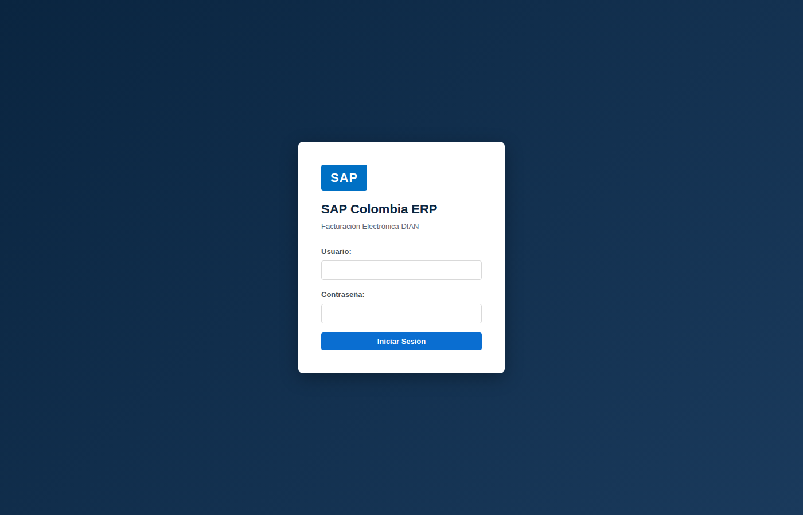
2. Barra de Contexto Superior (Scope Bar)
Gobernanza VisualLa barra superior acompaña al usuario en todas las vistas y proporciona contexto en tiempo real:
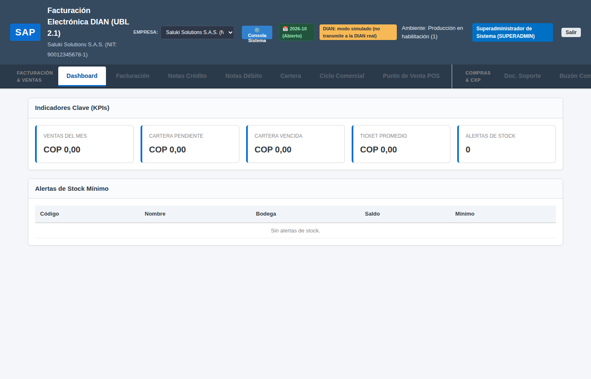
- Selector de Empresa: Permite a los usuarios asignados a múltiples razones sociales alternar de contexto sin cerrar sesión.
- Badge de Periodo Fiscal: Informa con código verde (
📅 2026-10 Abierto) o rojo (🔒 2026-10 Cerrado) el estado contable del mes. El sistema bloquea automáticamente cualquier intento de causar transacciones en meses ya cerrados. - Badge de Conexión DIAN: Notifica si el sistema está operando en ambiente de Habilitación, Pruebas o Producción.
- Botón Consola de Sistema: Visible exclusivamente para administradores globales para gestionar empresas y perfiles de rol.
3. Facturación Electrónica de Venta (UBL 2.1)
Núcleo DIANPermite liquidar y transmitir facturas electrónicas con firma digital XAdES-BES, generación determinística de CUFE (Código Único de Factura Electrónica), código QR y representación gráfica en PDF.
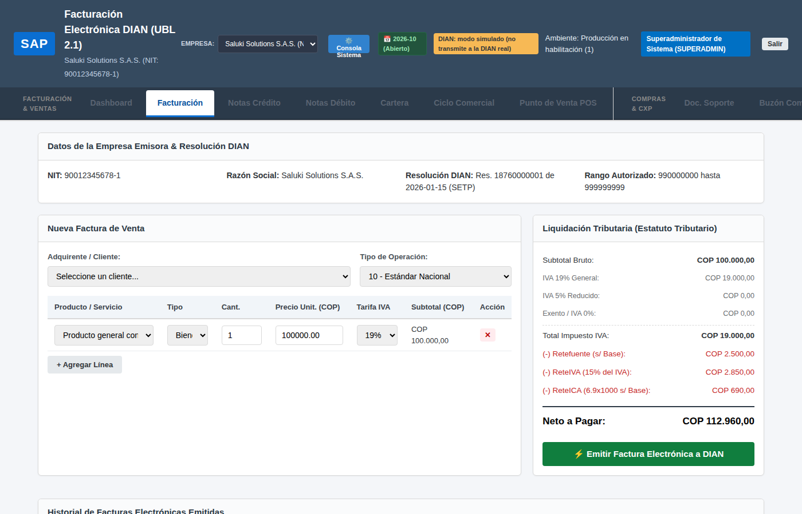
Instrucciones Paso a Paso:
- Verifica los datos de la resolución DIAN autorizada (Prefijo, Rango desde/hasta, Clave Técnica).
- Selecciona el cliente adquirente en el menú desplegable.
- Agrega los ítems o servicios seleccionando el producto, cantidad y precio unitario.
- Observa el panel derecho de Liquidación Tributaria: calcula instantáneamente Subtotal, IVA (19% o 5%), Retefuente, ReteIVA y ReteICA.
- Presiona el botón verde ⚡ Emitir Factura Electrónica a DIAN.
- El sistema transmite el XML al Web Service de la DIAN y te entregará el CUFE generado con los botones de descarga de XML UBL y PDF.
4. Notas Crédito y Anulaciones
Tipo Operación 91Las Notas Crédito electrónicas permiten modificar o anular facturas previamente aceptadas por la DIAN, asociando obligatoriamente la Factura Padre y el motivo oficial DIAN.
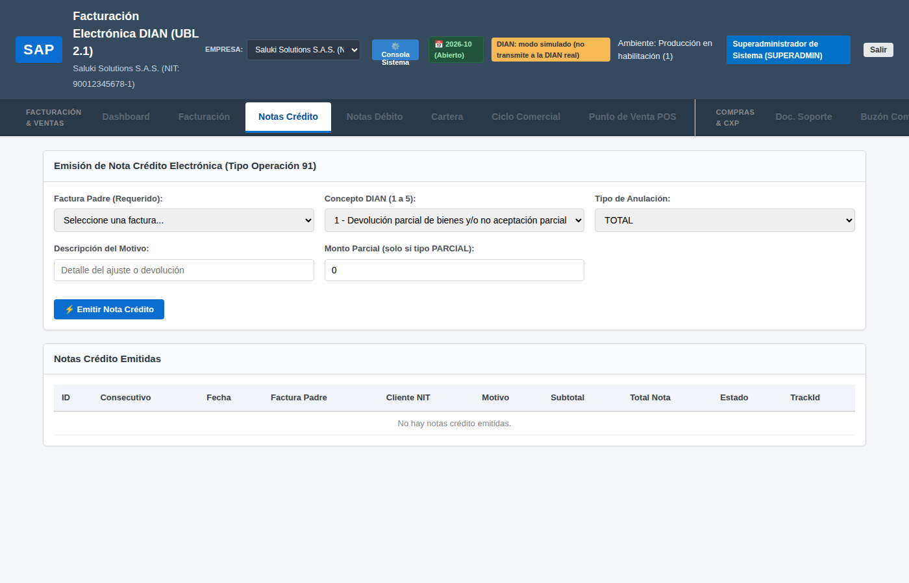
5. Ciclo Comercial Completo en Cascada
Cotización ➔ Pedido ➔ Remisión ➔ FacturaAutomatiza el flujo de ventas corporativo permitiendo avanzar el documento en un solo clic:
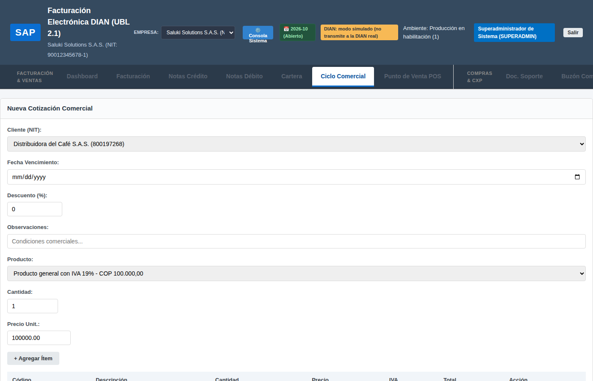
Flujo de Operación:
- 1. Crear Cotización: El vendedor diligencia los ítems y define el descuento comercial. Si el descuento supera el 15%, la cotización se bloquea en estado
REQUIERE_APROBACION. - 2. Visto Bueno Gerencial: Un usuario con rol de administración o supervisión revisa la cotización y presiona ✅ Aprobar Dto.
- 3. Convertir a Pedido: Se presiona Aprobar y Pedido ➔ generando el documento de pedido de venta.
- 4. Remisión de Almacén: Genera la orden de entrega física para despacho en bodega.
- 5. Facturación 1-Clic: Al presionar Facturar 1-Clic ⚡, el pedido se convierte directamente en factura electrónica DIAN sin recapturar información.
6. Punto de Venta POS Electrónico
Resolución DIAN 000165/2023Diseñado para venta rápida de mostrador en cajas físicas con control de turnos, arqueos y comprobante fiscal de turno.
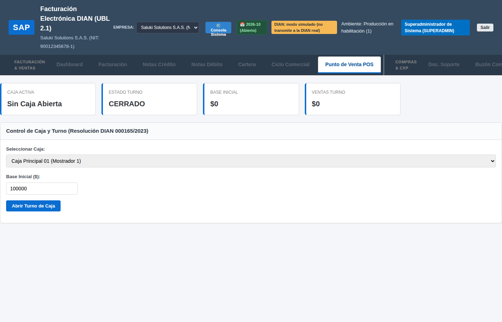
7. Cartera y Cuentas por Cobrar (CxC)
Edades de CarteraVisualiza en tiempo real los saldos pendientes de clientes clasificados por vencimiento:
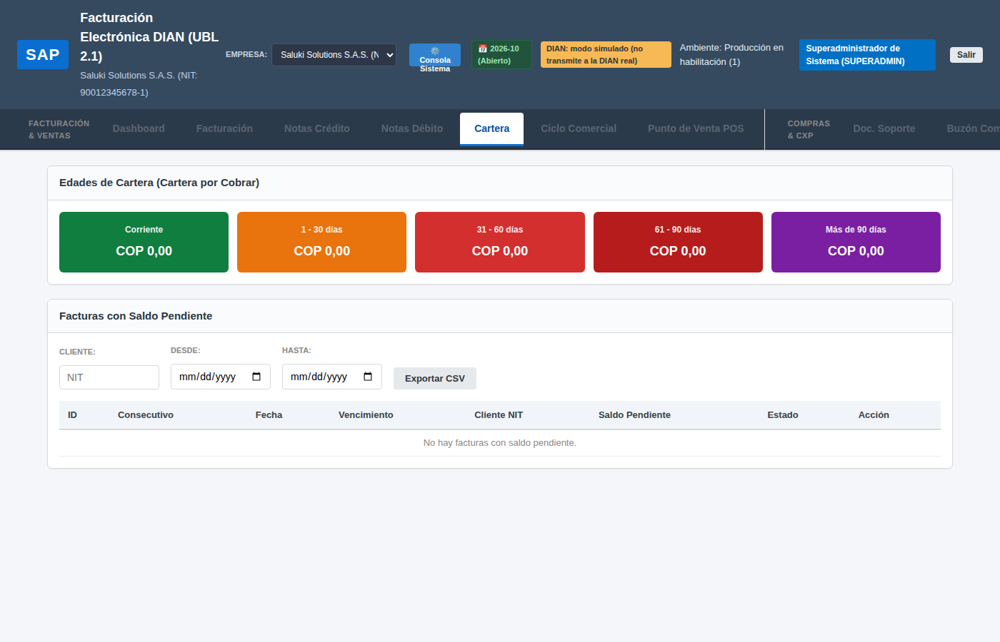
8. Documento Soporte Electrónico
Código CUDSPermite soportar fiscalmente costos y deducciones por adquisiciones realizadas a sujetos no obligados a expedir factura de venta.
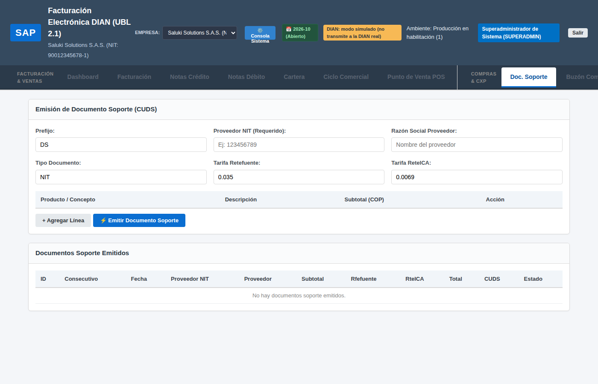
9. Buzón de Compras, RADIAN y Cuentas por Pagar
Título Valor & TrazabilidadAutomatiza el procesamiento de facturas recibidas de proveedores mediante la carga de archivos XML (AttachedDocument) o ZIP oficiales.
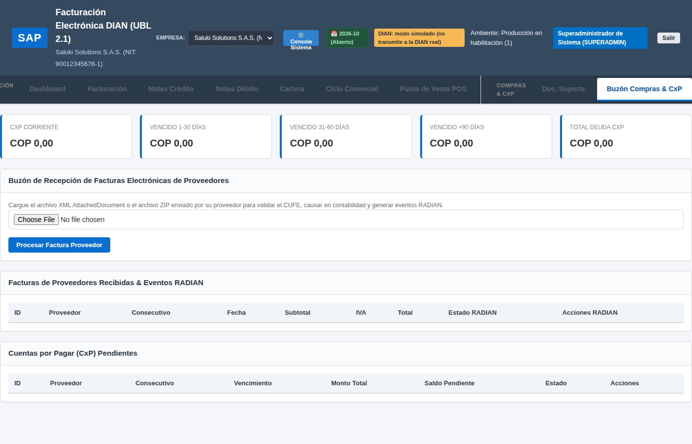
10. Contabilidad General y Balance de Comprobación
Partida Doble PUCGarantiza la consistencia contable del ERP. Cada venta, compra, nota o comprobante de nómina genera automáticamente su asiento en partida doble.
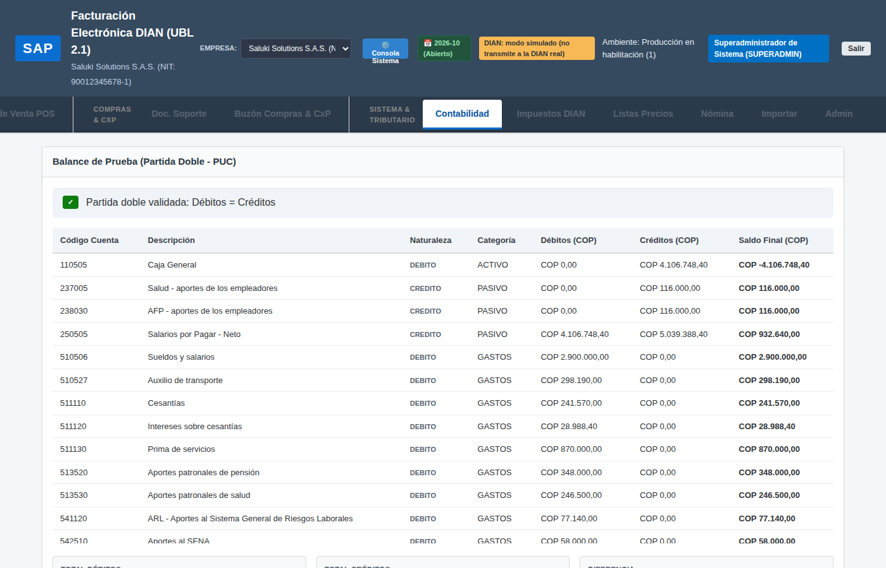
11. Formularios Tributarios DIAN (300 y 350)
Borradores FiscalesGenera en un clic los borradores idénticos a los formularios oficiales de la DIAN listos para diligenciar en el portal Muisca.
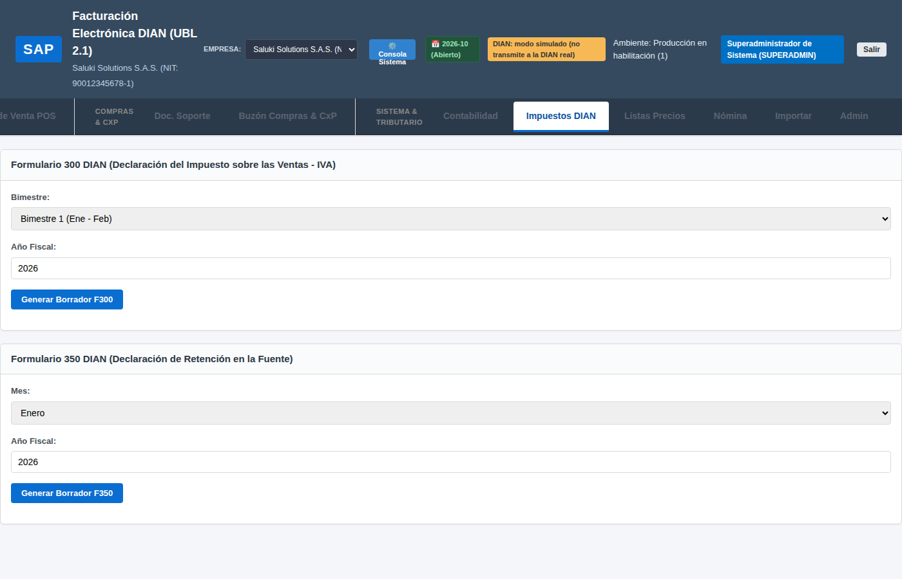
12. Listas de Precios y Trazabilidad de Lotes
Kardex AvanzadoPermite administrar múltiples listas de precios (Mayoristas, Distribuidores) y llevar el control estricto de lotes y fechas de vencimiento en inventario.
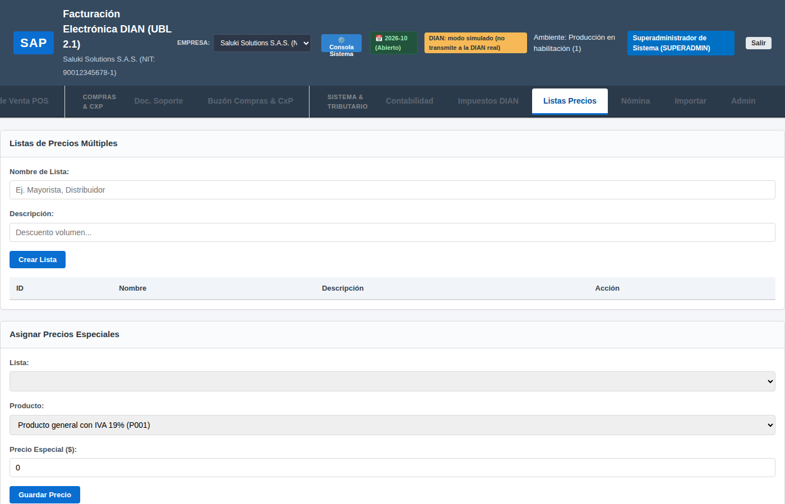
13. Nómina Electrónica y Novedades
Resolución DIAN NóminaGestiona el personal, liquida novedades (horas extra, recargos, festivos), calcula deducciones legales y transmite los comprobantes electrónicos de nómina.
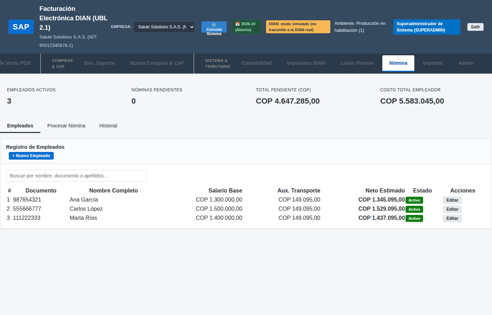
14. Consola de Sistema y Multi-Empresa
Tenant ManagerEspacio exclusivo para administradores de plataforma donde se administran empresas subsidiarias, certificados digitales, usuarios y perfiles de rol.
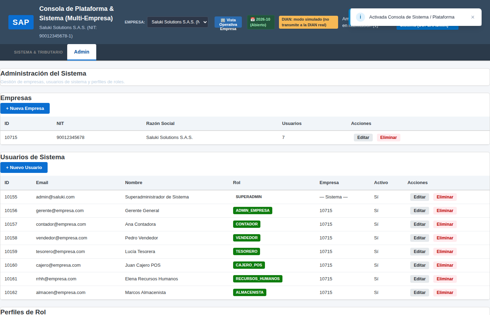
15. Motor de Segregación de Obligaciones (SoD)
Control Interno AntifraudeEl ERP previene activamente conflictos de interés y fraudes operativos mediante un motor de reglas que audita en tiempo real los permisos asignados a cada rol:
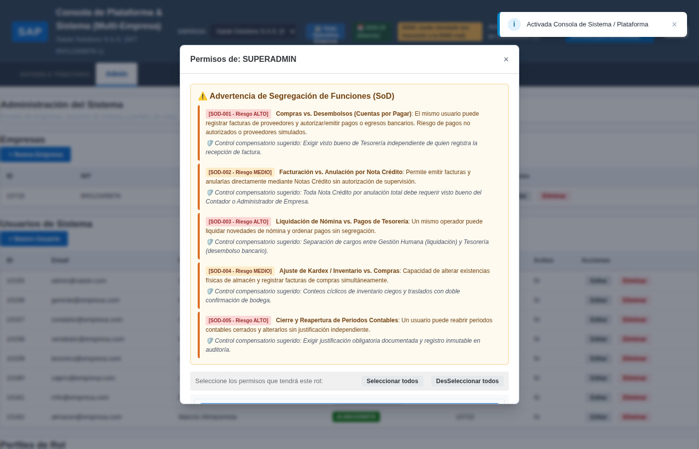
Manuales Especializados por Cargo
👑 Superadministrador de Sistema (Global)
Acceso PlataformaPropósito: Gestionar la infraestructura, dar de alta nuevas empresas y velar por la seguridad de la plataforma.
- Creación de Empresas: Ingresa a Consola Sistema ➔ Empresas y registra NIT, razón social y datos tributarios.
- Firma Digital: Configura el certificado
.p12y contraseña de cada empresa para la firma electrónica. - Gobernanza SoD: Supervisa que ningún rol operativo acumule permisos incompatibles.
👔 Gerente General / Administrador de Empresa
Supervisión TotalPropósito: Monitoreo de indicadores, autorizaciones comerciales y control del negocio.
- Monitoreo de KPIs: Consulta el Dashboard para conocer las ventas del mes, cartera pendiente y margen de utilidad.
- Aprobación de Descuentos: Revisa cotizaciones que superen el límite comercial del 15% y autoriza su conversión a pedido.
- Auditoría de Cierres: Aprueba los cierres contables mensuales formalizados por el contador.
📊 Contador General / Revisor Fiscal
Fiscal & ContablePropósito: Garantizar la veracidad de los estados financieros y el cumplimiento tributario ante la DIAN.
- Balance de Comprobación: Audita periódicamente el balance verificando que Débitos = Créditos.
- Declaraciones Tributarias: Genera los borradores de los Formularios 300 (IVA) y 350 (Retención en la Fuente).
- Cierre de Periodo Fiscal: Ejecuta el cierre mensual formalizando la justificación contable para impedir alteraciones retroactivas.
💼 Vendedor / Ejecutivo Comercial
Ventas & ClientesPropósito: Realizar cotizaciones, gestionar pedidos y atender clientes bajo estricto aislamiento de datos.
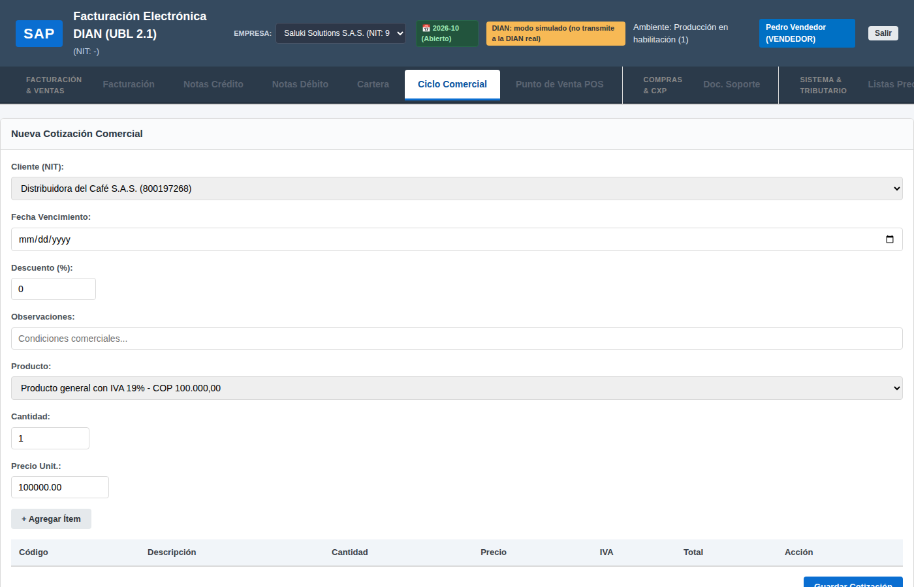
- Aislamiento de Información: Cada vendedor solo tiene visibilidad de sus propias cotizaciones y pedidos creados.
- Límite de Descuento: Puede conceder descuentos hasta el 15%. Descuentos superiores requerirán aprobación previa.
💰 Tesorero / Cuentas por Pagar
Tesorería & CxPPropósito: Tramitar compras, registrar eventos RADIAN y programar desembolsos a proveedores.
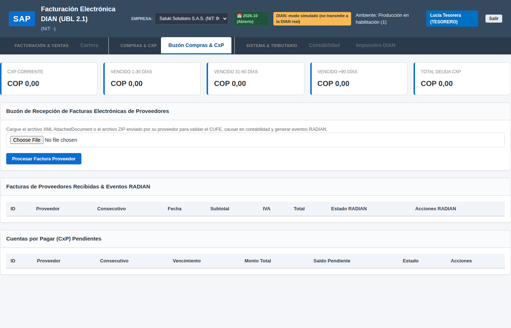
- Carga de Facturas: Sube el archivo XML o ZIP recibido del proveedor para causar la deuda en contabilidad.
- RADIAN: Emite los eventos 030 (Acuse) y 032 (Recepción) para habilitar el título valor.
- Egresos: Genera los comprobantes de egreso bancarios una vez autorizados los pagos.
🛒 Cajero Punto de Venta POS
Turnos & MostradorPropósito: Atención rápida en caja física, cobro y cuadre de turnos.
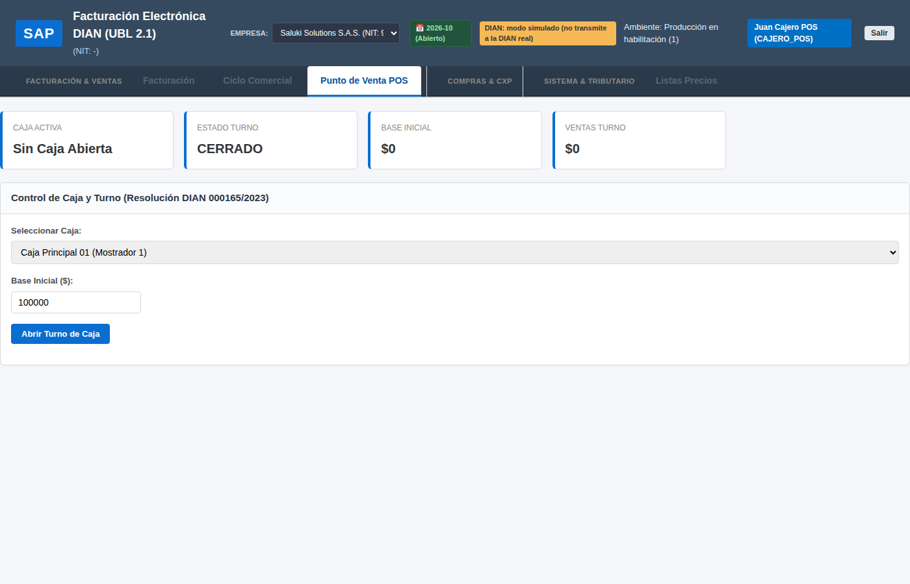
- Apertura de Turno: Digita la base en efectivo inicial y presiona Abrir Turno.
- Ventas: Registra productos por escaneo de código de barras y emite tickets electrónicos.
- Cierre de Turno: Realiza el conteo físico de dinero para generar el comprobante de cuadre de caja.
👥 Gestor de Talento Humano / Nómina
Gestión HumanaPropósito: Manejo de empleados, liquidación mensual y nómina electrónica DIAN.
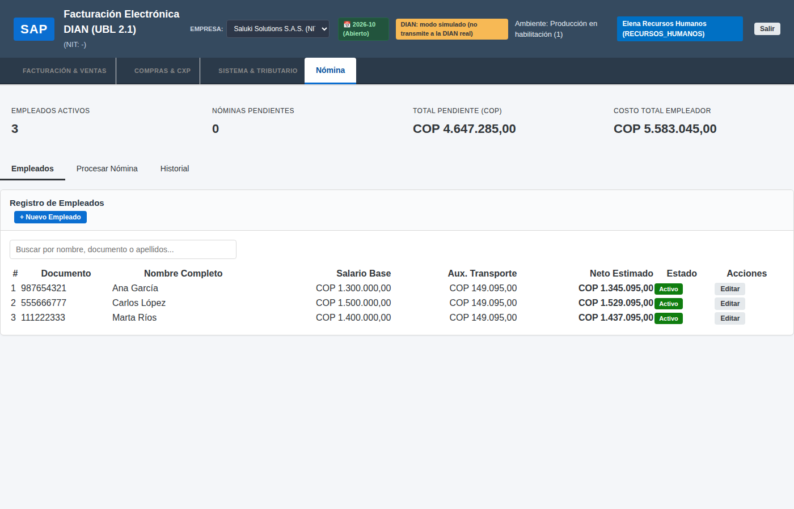
🔑 Tabla de Credenciales para Pruebas
Entorno de PruebasPuedes ingresar al sistema en http://localhost:8000 con cualquiera de las siguientes cuentas para comprobar cómo cambia la interfaz, los permisos y las restricciones según el cargo:
| Cargo / Rol | Correo Electrónico | Contraseña | Alcance Operativo |
|---|---|---|---|
| SUPERADMIN | admin@saluki.com |
admin123 |
Control total de plataforma, tenants, empresas y SoD |
| ADMIN_EMPRESA | gerente@empresa.com |
Gerente123! |
Dashboard, aprobaciones de descuento, supervisión empresa |
| CONTADOR | contador@empresa.com |
Contador123! |
PUC, balance, libros oficiales, impuestos 300/350 y cierre |
| VENDEDOR | vendedor@empresa.com |
Vendedor123! |
Ciclo comercial, cotizaciones propias y pedidos |
| TESORERO | tesorero@empresa.com |
Tesorero123! |
Buzón XML compras, eventos RADIAN, Cuentas por Pagar |
| CAJERO_POS | cajero@empresa.com |
Cajero123! |
Apertura de turno, tickets electrónicos y arqueo de caja |
| RECURSOS_HUMANOS | rrhh@empresa.com |
Nomina123! |
Registro de personal, liquidación y nómina electrónica |
| ALMACENISTA | almacen@empresa.com |
Almacen123! |
Kardex, control de existencias mínimas y lotes |